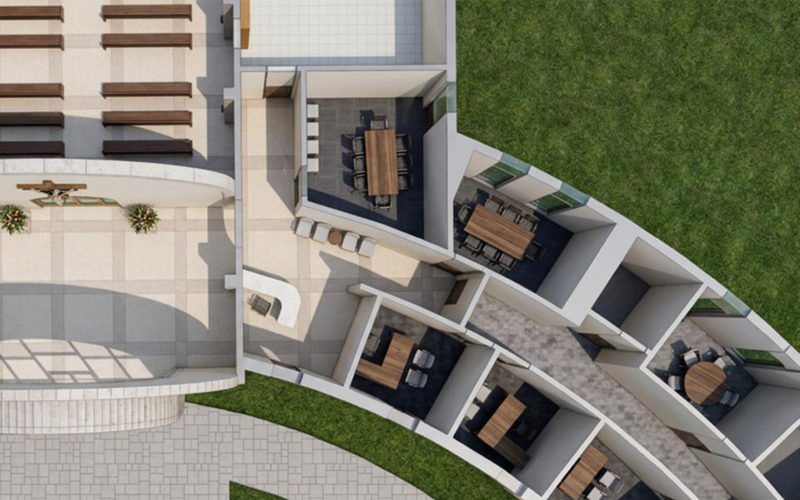

Behar Mapping
↗
Crypt3D
3D modeling of mausoleums and columbariums to create detailed digital cemetery environments that support advanced sales, inventory, and management tools. The system has been applied across hundreds of cemetery projects throughout the United States.